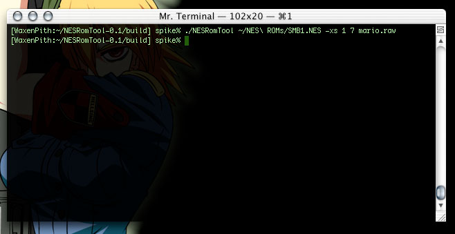
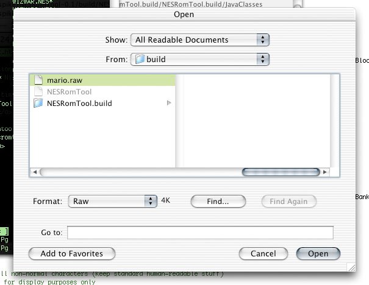
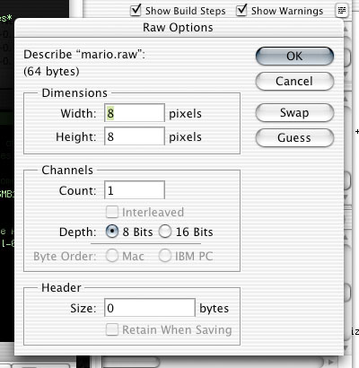
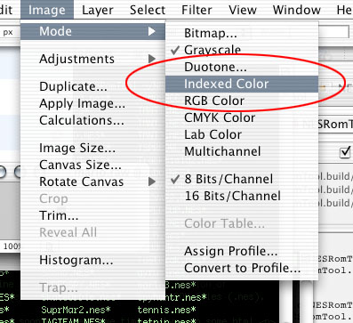
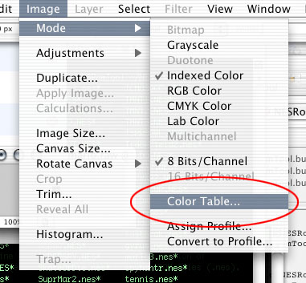
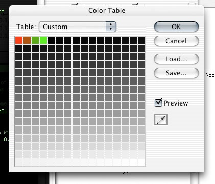
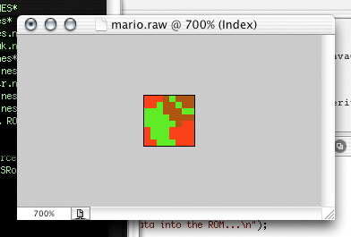

This is a brief rundown of the steps necessary for opening the extracted sprites in photoshop.
I'll put together a tutorial on putting them back in later tonight possibly.
(Here is a little kit including a swatch library of possible NES colors and some helpful actions)
STEP 1

Fire up your terminal and run the tool on your ROM:
./NESRomTool <filename> -xs <chrIndex> <spritIndex> <toFile>
It will extract from the ROM <filename> and put it into <toFile>
(Remember that <toFile> should have the .raw extension)
STEP 2

Fire up Photoshop and select the .raw file you extracted.
STEP 3

Set your settings as shown...
STEP 4

Set the color mode to "Indexed Color"
(Image>Mode>Indexed Color)
STEP 5

Select "Color Table..." from the Mode submenu to bring up the color table window...
STEP 6

Set the first 4 colors to whatever you want (the rest of the colors are unused).
You can click and drag over the first 4 boxes, then pick a start and end color. Photoshop will interpolate the colors in between.
STEP 7

There you have it, a sprite! Have fun editing!
When you're done, you just save the file as raw again from Photoshop and you can inject it back into the ROM like:
./NESRomTool <filename> -is <chrIndex> <spritIndex> <fromFile>